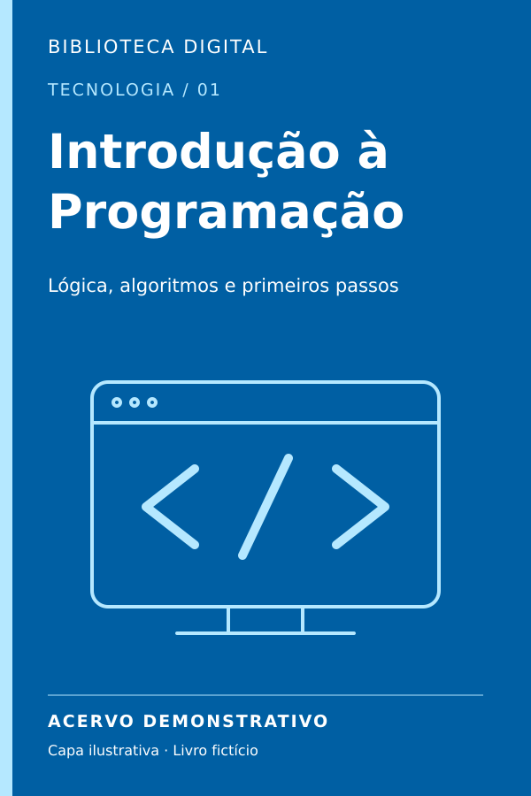
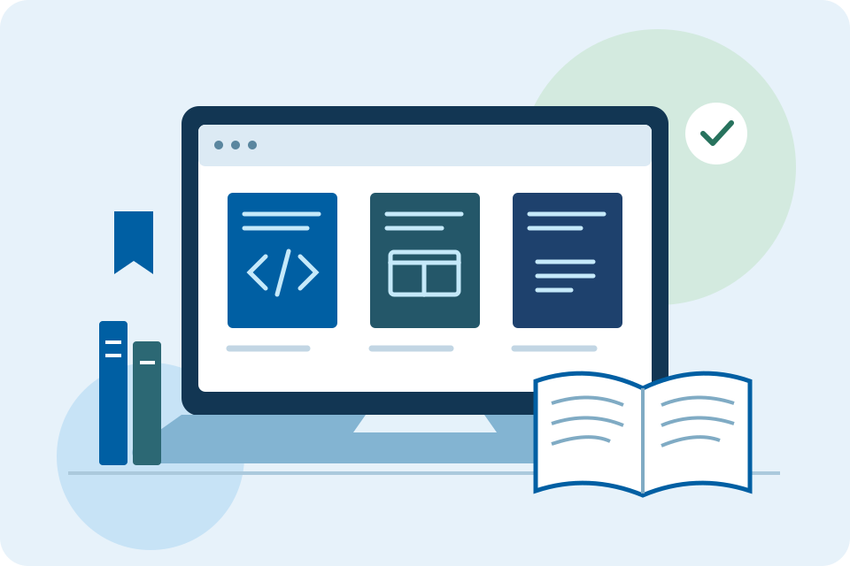
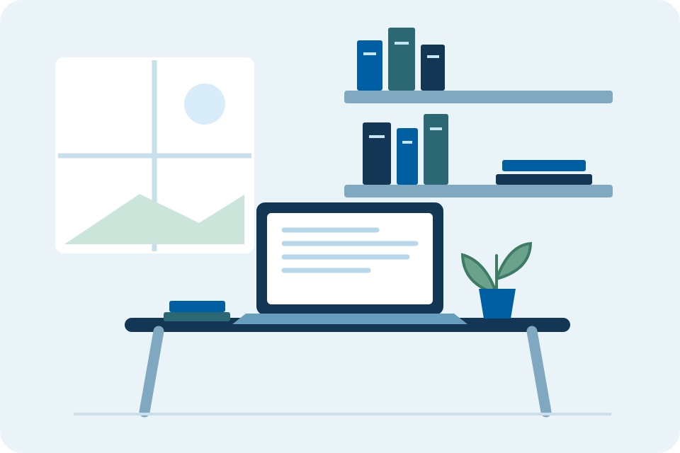
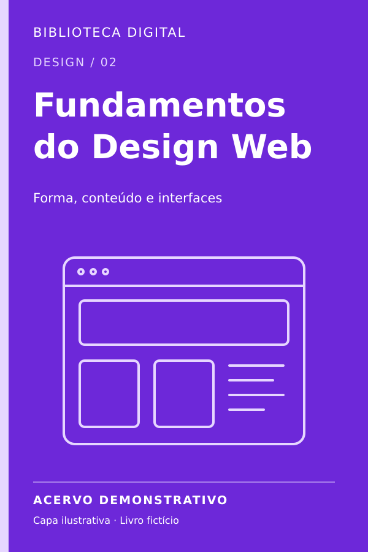
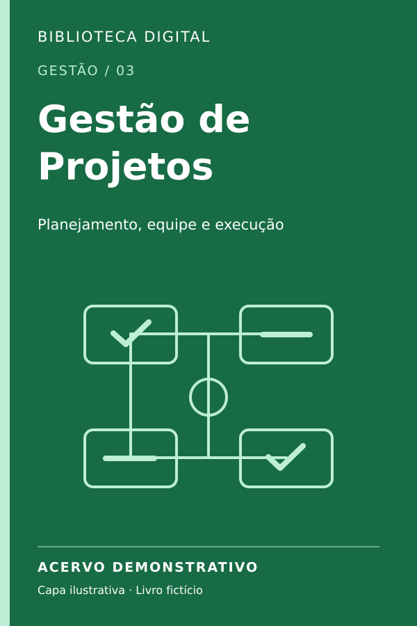
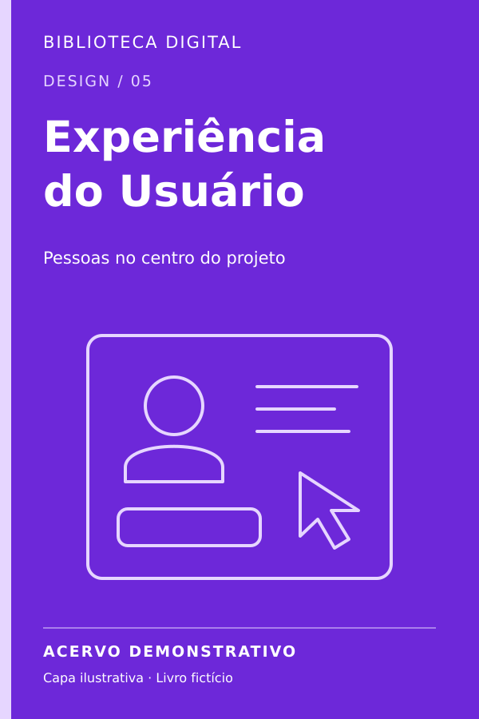
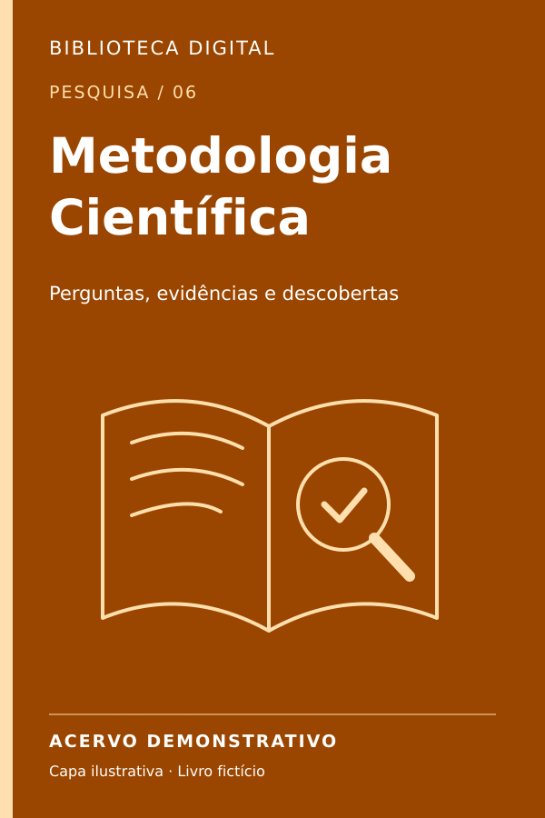
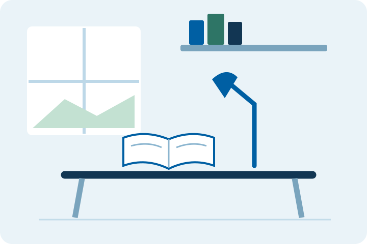
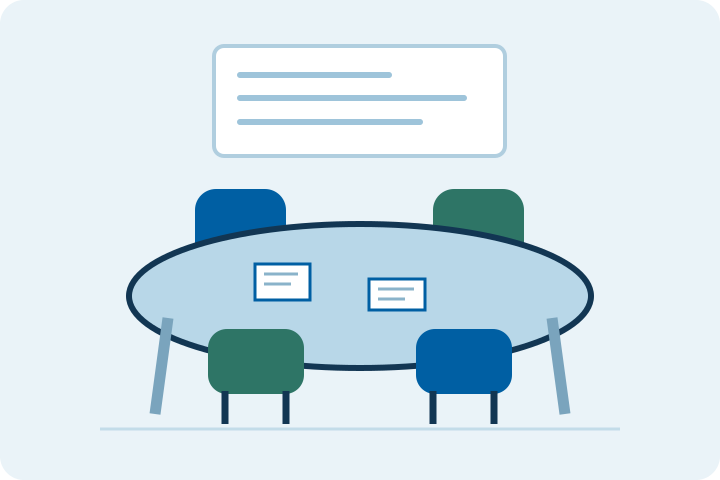
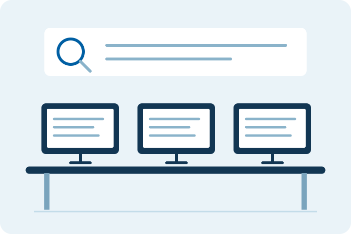

Tecnologia
Introdução à Programação
Conheça os fundamentos da lógica e os primeiros passos para desenvolver programas.
Saiba mais
Conteúdo demonstrativo sobre variáveis, condições, repetições e construção de algoritmos.
Conhecimento para acompanhar sua jornada acadêmica. Explore diferentes áreas e encontre inspiração para seus estudos.
Explorar livros
Esta proposta de biblioteca digital aproxima estudantes de conteúdos de tecnologia, design, gestão e pesquisa.

O acervo demonstrativo apresenta temas que apoiam a formação acadêmica. A organização por categorias ajuda a identificar assuntos de interesse.
Explore os materiais do nosso acervo demonstrativo.

Tecnologia
Conheça os fundamentos da lógica e os primeiros passos para desenvolver programas.
Conteúdo demonstrativo sobre variáveis, condições, repetições e construção de algoritmos.

Design
Explore conceitos de composição, cores e tipografia aplicados à criação de interfaces.
Conteúdo demonstrativo sobre hierarquia visual, organização de páginas e layouts responsivos.

Gestão
Entenda como organizar atividades, acompanhar prazos e trabalhar em equipe.
Conteúdo demonstrativo sobre planejamento, definição de objetivos e acompanhamento de entregas.
Tecnologia
Descubra como armazenar, organizar e consultar informações de maneira estruturada.
Conteúdo demonstrativo sobre tabelas, relacionamentos, chaves e consultas básicas em SQL.

Design
Aprenda a pensar em interfaces a partir das necessidades das pessoas que vão utilizá-las.
Conteúdo demonstrativo sobre pesquisa com usuários, usabilidade, prototipação e acessibilidade.

Pesquisa
Conheça caminhos para investigar problemas e desenvolver trabalhos acadêmicos.
Conteúdo demonstrativo sobre perguntas de pesquisa, levantamento de fontes e organização de evidências.
Unidades ilustrativas criadas para este projeto acadêmico. As imagens e descrições não representam instalações reais.

Exemplo de ambiente pensado para leitura concentrada, revisão de conteúdos e realização de atividades individuais.

Exemplo de ambiente voltado à troca de ideias, discussão de conteúdos e desenvolvimento de trabalhos em equipe.

Exemplo de ambiente com computadores para pesquisa acadêmica, consulta de materiais digitais e organização dos estudos.
Para informações sobre a instituição e seus serviços, consulte os canais oficiais de atendimento.
WhatsApp institucional: (11) 4210-4950
Acessar atendimento oficial